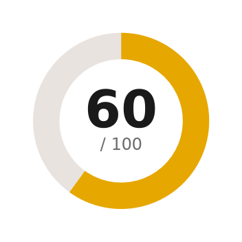
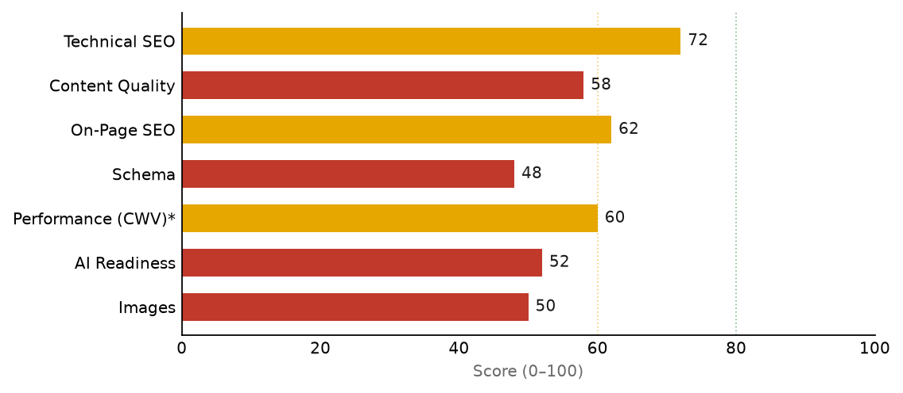

The site has a healthy technical foundation — clean crawl with no broken URLs, HTTPS, valid Yoast sitemaps, consistent non-www canonicals, properly noindexed cart/checkout/account, and LiteSpeed caching. Homepage and product copy are strong.
The 60/100 score is held back by four fixable themes: missing Product/Offer structured data on a commerce catalog, thin pages with missing meta descriptions, index bloat from 44 near-duplicate product tags, and missing image alt text. Most are sub-1-hour Yoast/WooCommerce changes.
* Performance is a lab/heuristic estimate — no Google CrUX field data was available (no API key configured).

| Category | Weight | Score |
|---|---|---|
| Technical SEO | 22% | 72 |
| Content Quality | 23% | 58 |
| On-Page SEO | 20% | 62 |
| Schema | 10% | 48 |
| Performance (CWV)* | 10% | 60 |
| AI Readiness | 10% | 52 |
| Images | 5% | 50 |
WebPage JSON-LD — no Product, Offer, AggregateRating. Zero rich-result eligibility on a commerce catalog.og:type=article on productsWrong Open Graph type for product links; should be product.umami-concentrado/intenso/profundo/suave, marmoleo-alto vs alto-marmoleo) with ~1 product each./nosotros/, /contacto/, /faq/, the blog, and product-category pages./faq/ — already has 536 words of Q&A.| Action | How / where | Effort |
|---|---|---|
| Add Product structured data (Product + Offer) | Yoast WooCommerce SEO / native WC schema | Dev |
| Fix og:type to 'product' | Yoast WooCommerce SEO | <1h |
| Noindex product tags + uncategorized | Yoast → Taxonomies | <1h |
| Action | How / where | Effort |
|---|---|---|
| Add meta descriptions to ~5 pages | Yoast meta field | <1h |
| Add FAQPage schema to /faq/ | FAQ block / JSON-LD | <1h |
| Fix homepage duplicate H1 + category H1 | Elementor + Yoast templates | Few h |
| Add image alt text | WP Media Library | <1h |
| Add security headers (HSTS, nosniff, etc.) | LiteSpeed / .htaccess | Few h |
| Resolve /shop/ vs /tienda/ duplication | 301 + canonical | Few h |
| Action | How / where | Effort |
|---|---|---|
| Build out About + blog + contact content | Content | Project |
| Add LocalBusiness/FoodEstablishment schema | JSON-LD | Few h |
| Performance pass: hero eager, WebP, defer JS | LiteSpeed + Elementor | Project |
| Internal linking + GEO content depth | Content | Few h |
| Action | How / where | Effort |
|---|---|---|
| Configure Google APIs (PSI/CrUX/GSC/GA4) | API key + GSC verify | <1h |
| Backlink / authority building | Outreach + Moz/DataForSEO | Ongoing |
| Normalize EN system slugs | Migration only | Project |
Effort key: <1h = single setting / quick edit · Few h = a few hours · Project = multi-step / dev or content work.
HTTPS + HTTP/2/3, clean robots.txt, valid split Yoast sitemaps, consistent non-www canonicals, all 90 URLs return 200, cart/checkout/account noindexed, LiteSpeed caching. Gaps: index bloat (44 tags + uncategorized), missing security headers (HSTS, X-Content-Type-Options, X-Frame-Options, Referrer-Policy), and duplicate shop surfaces (/shop/ vs /tienda/).
Strong homepage (~1,034 words) and product copy. Gaps: thin/empty pages (blog 77 words, category 191, About 224, Contact 270), missing meta descriptions, duplicate homepage H1, and missing category H1s with default archive titles. E-E-A-T trust signals (provenance, team, certifications) are underdeveloped.
Clean Yoast graph (Organization, WebSite+SearchAction, BreadcrumbList, WebPage, CollectionPage). Critical gaps: no Product/Offer on products, og:type=article, no FAQPage on a 536-word FAQ, no LocalBusiness despite local delivery.
Elementor + Swiper + jQuery + ~215KB HTML; LiteSpeed helps but mobile INP is the likely weak point. Confirm the hero/LCP image is eager + fetchpriority=high. Images: 67% of homepage images and several product images lack alt text; serve WebP/AVIF.
Clean schema and clear es_MX content help, but thin editorial content and missing Product/FAQ/LocalBusiness schema limit citability. Build out the Wagyu education pages and add an llms.txt.